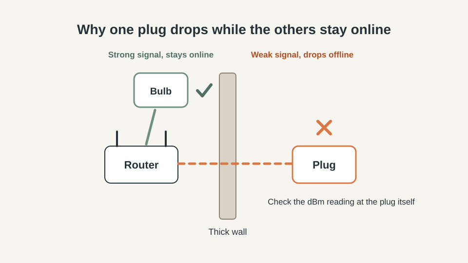
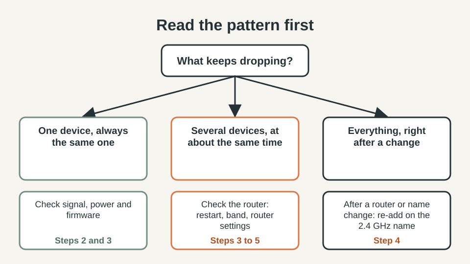
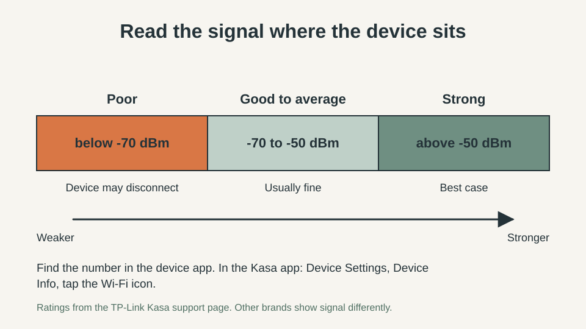
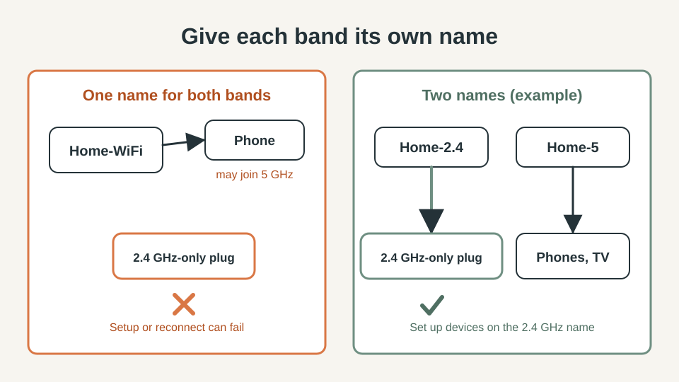

SMART HOME · WI-FI RELIABILITY
Smart Plugs and Bulbs Keep Going Offline? A 20-Minute Fix Order

Your smart plug says "offline" again, the lamp schedule skipped, and the app only works after a restart. Resetting everything is the slow way. This guide gives you a fix order that takes about 20 minutes and costs nothing: read the pattern, check the signal, restart, fix the Wi-Fi name, turn off router helpers, then test on a phone hotspot.
The quick answer
- Note whether one device or several drop. The pattern tells you where to look first.
- A weak signal is a common cause. TP-Link rates a reading below -70 dBm as poor and says the device may disconnect.
- Many smart plugs and bulbs support only the 2.4 GHz band. LEDVANCE says its SMART+ WiFi and SMART+ Matter devices work on 2.4 GHz only, not on 5 GHz.
- TP-Link lists band steering (also called Smart Connect) as a router feature known to conflict with its Kasa devices, so turn it off as a test.
- Test the device on a phone hotspot. If it stays online there, your router settings are the cause.
Quick plan
| Time | About 20 minutes |
| Cost | Free |
| Best for | Plugs, bulbs, cameras and sensors that show "offline" or "no response" |
| Goal | Find the one cause, not reset everything |
Step 1: Read the pattern before you touch anything
Write down three things on paper: which devices drop, how often, and what changed before it began. A new router or internet box, a changed Wi-Fi name or password, a firmware update and a new batch of devices are the usual suspects. LEDVANCE also lists a changed router name or password among the first things to check.

If only one device drops, work on that device. If several drop at about the same time, the shared part is the router, so give the router most of your attention. If your internet itself goes down, that is a different problem; our Wi-Fi outage test shows what keeps working then.
Step 2: Check the signal strength where the device sits
Do not judge by your phone next to the router. Check the device where it is plugged in. Some apps show a number: in the Kasa app it sits under Device Settings, Device Info, behind the Wi-Fi icon. TP-Link rates a reading stronger than -50 dBm as strong, -50 to -70 dBm as good to average, and weaker than -70 dBm as poor, and says to move the device or the router when it is below -70 dBm. If your app shows no number, take a phone to the device, connect it to the same Wi-Fi and open a web page. LEDVANCE suggests exactly this test.

A fridge, a mirror, a metal shelf or a thick wall between router and plug can cost you signal. Moving the plug to another outlet is a free test.
Step 3: Restart in order, then update
- Restart the router and wait until its Wi-Fi is back.
- Unplug the device for a minute, plug it back in and see whether it reconnects. TP-Link says restarting the router and the device clears many temporary offline problems.
- Update the device firmware and the app. TP-Link notes that outdated firmware can cause an unstable connection.
If the router seems overloaded, LEDVANCE suggests switching Wi-Fi off on one other device and seeing whether the problem device connects. A weekly timed restart of the router is possible with a smart plug; see what you can safely plug into a smart plug before you try it.
Step 4: Give each Wi-Fi band its own name
Many routers broadcast 2.4 GHz and 5 GHz under one name. A phone may join the 5 GHz band while you set up a 2.4 GHz-only plug, and setup or reconnecting fails. LEDVANCE says to check whether the two bands share one name and, if they do, to give them different names. TP-Link also asks for the phone and the device to be on the same 2.4 GHz network while pairing a HomeKit device, and to turn off a VPN on the phone during setup.

LEDVANCE suggests keeping the current name for 5 GHz and creating a new name for 2.4 GHz, because phones, laptops and TVs work fine on 5 GHz. Any change of name or password means everything on the old name must reconnect, so plan for that. Check the spelling too: LEDVANCE warns about extra blanks in the network name and wrong upper or lower case in the password.
Step 5: Turn off the router helpers one at a time
TP-Link names three features that are known to conflict with Kasa devices: band steering (Smart Connect or Whole-Home Wi-Fi), Wi-Fi optimizing and channel optimization. Turn off one, wait a day, and see. Changing three settings at once tells you nothing about which one mattered.
- Security mode. If the router is set to WPA3 only, TP-Link advises Auto or WPA2/WPA3 for its HomeKit devices, and LEDVANCE asks for WPA2-PSK with AES, or Auto. Note the old setting first, because phones and laptops may need to reconnect.
- MAC filtering and access control. If a filter list is on, add the device or turn the filter off. Both makers name it as a cause.
- Wi-Fi mode. For the 2.4 GHz band, LEDVANCE says not to use "11n only".
- DHCP. LEDVANCE says the router's DHCP service must be on, or the device's address may already be in use.
Settings sit in different menus on every router, so use your router's manual and your device maker's support page. The vendor advice here is a starting point, not a promise for every model.
Step 6: Test on a phone hotspot
TP-Link suggests connecting the device to another router's 2.4 GHz network or a mobile hotspot to find out whether the problem belongs to your router. If it stays online there, go back to Steps 4 and 5. If it drops there too, the device, its firmware or its power is the likely cause.
What not to buy yet
- A Wi-Fi extender or mesh kit. Take the signal reading first; moving the device or the router may be enough.
- New "better" plugs or bulbs. A different brand on the same router and band meets the same settings.
- A new router, until the hotspot test points at the router.
If a thermostat, rather than a plug, keeps dropping off, check its power first; our smart thermostat C-wire guide explains how. For leak sensors that must stay online, see where to put water leak sensors.
Quick win (10 minutes)
- Restart the router, wait for Wi-Fi, then restart the device.
- Read the signal at the device and move it closer if it is below -70 dBm.
- Check that you are on the 2.4 GHz network when you re-add anything.
Common mistakes
- Resetting every device first, which wipes names, rooms and automations.
- Checking Wi-Fi bars on a phone next to the router instead of at the device.
- Changing several router settings in one go.
- Fixing one plug when five devices drop at the same time.
When to contact the maker
If nothing works, tell support what TP-Link asks for: the LED state when the device is offline, its MAC address, your router model, how your network is wired (internet box, router, device), whether the device answers in the app on home Wi-Fi at that moment, and how often it happens and what fixes it.
FAQ
Why does my plug say offline when my phone has full Wi-Fi bars?
A phone and a plug can see the same router very differently. They sit in different places, and many plugs and bulbs use only the 2.4 GHz band. Take the reading at the device itself, in its app if it shows one, or hold a phone next to the device and load a web page.
Should smart devices live on a separate network?
Maybe. TP-Link suggests creating an independent 2.4 GHz network for setup when pairing keeps failing, and our smart home privacy check recommends a guest network for security. Some routers keep guest devices apart from the rest of the home network, which may stop local control, so check your router's guest-network setting if a device works on the main network but not as a guest.
Is it safe to turn off band steering?
It is a convenience feature that moves devices between the 2.4 GHz and 5 GHz bands. TP-Link lists it among the settings to turn off for Kasa devices that keep dropping. Note the current setting first, and turn it back on if it changes nothing. Phones and laptops may then stay on the band they joined instead of switching.
Do I need to reset the device?
Not first. A reset removes the device from your app, so you set it up again and may have to reconnect its automations. LEDVANCE puts a factory reset after the checks on power, signal, router and password; do the same.
How do I know the device itself is faulty?
If it drops on a phone hotspot or another router too, or keeps dropping after the signal reading is good and the router helpers are off, the device or its firmware is the likely cause. Contact the maker with the details listed above.
Sources and further reading
- TP-Link, "Fix Your Kasa Device Offline Issues" (updated April 2026): https://www.tp-link.com/in/support/faq/3434/
- TP-Link Tapo, "How to Troubleshoot when a TP-Link HomeKit-enabled device fails to add to Apple's Home App": https://www.tapo.com/faq/199/
- LEDVANCE, "Which WiFi settings are needed?" (SMART+ app FAQ): https://www.ledvance.com/en-uk/home-lighting/services/faq/faq-for-new-smart-app/which-wifi-settings-are-needed
- LEDVANCE, "Lost Connection or Blinking Product Issues?": https://www.ledvance.it/en-uk/home-lighting/services/faq/faq-for-new-smart-app/lost-connection-or-the-product-is-blinking